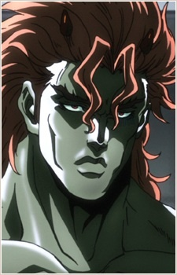

Дата рождения: Около 8,000 до н.э
Возраст: Около 10000 лет
Раса: Человек из колонны
Пол: Мужской
Национальность: Коренной американец

Сантана
Информация
Описание
Сантана (サンタナ Santana) — второстепенный антагонист Боевого стремления.
Человек из колонны. Впервые был обнаружен в мексиканской пирамиде в 1938 году, был пробуждён нацистами с помощью крови еврейских пленников, которая хотела укрепить нацистскую армию. Способен проходить через отверстия до 4 сантиметров, однако для этого ломает свои кости, и может вселяться в тело человека, поглощая его. Единственный, кто теоретически не был убит Джозефом, так как обратился в камень под действием солнечных лучей, но без них сразу может прийти обратно к жизни. Ему около 10000 лет.
Человек из колонны. Впервые был обнаружен в мексиканской пирамиде в 1938 году, был пробуждён нацистами с помощью крови еврейских пленников, которая хотела укрепить нацистскую армию. Способен проходить через отверстия до 4 сантиметров, однако для этого ломает свои кости, и может вселяться в тело человека, поглощая его. Единственный, кто теоретически не был убит Джозефом, так как обратился в камень под действием солнечных лучей, но без них сразу может прийти обратно к жизни. Ему около 10000 лет.
Манга
Аниме